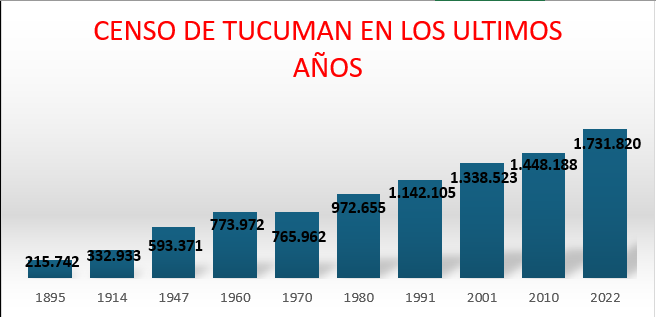

Tucumán
9 de Julio
- Matematicas
Inicio
Geografia
Historia
Matematicas
Censo de Tucumán
Año
N° de Personas
1865
215.742
1914
332.933
1947
593.371
1960
773.972
1970
765.962
1980
972.655
1991
1.142.105
2001
1.338.523
2010
1.448.188
2022
1.731.820

Superficie de Tucumán
La Superficie de Tucumán es:
22.524 km2